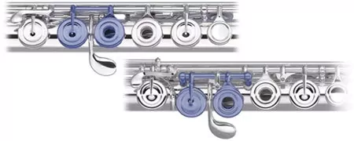

Tips zum Instrumentenkauf
Sprungmarken
| E-Gitarre | Klarinette |
| Querflöte | Saxophon |
| Klavier | Keyboard |
Akustische Gitarre
Bei akustischer Gitarre ist es wichtig, daß Sie sich eine sogenannte Konzertgitarre oder auch Klassiche Gitarre besorgen. Dieses Instrument ist mit Nylonsaiten bespannt, daß für die Finger im Gegensatz zu Stahlsaiten sehr weich ist. Außerdem hat die Konzertgitarre ein breiteres Griffbrett im Gegensatz zu einer
Westerngitarre und man kann dann auch mit der linken Hand sauberer greifen und mit der rechten Hand besser zupfen. Eine Westerngitarre wird oft in der Popmusik eingesetzt ist aber wie gesagt für den Anfänger noch nicht so geeignet. Später kann man sich ja dann noch eine zulegen. Eine normale Westerngitarre hat eine Sattelbreite von 42 mm und eine Mensur von 64 cm. Der Kaufpreis liegt so ab 59,- EUR aufwärts.
Eine normale Konzertgitarre hat eine Sattelbreite von 52 mm und eine Mensur von 65 cm. Eine Mensur ist die Länge einer freischwebende Saite zwischen links vorne dem Sattel und rechts dem Steg. Man spricht dann auch von einer 4/4 Gitarre. 1/2 Gitarre hat eine Mensur von 53 cm, eine 1/4 Gitarre hat eine Größe von 48 cm und schließlich die kleinste Gitarre also eine 1/8 Gitarre ist nur noch 44 cm lang.
Eine Konzertgitarre bekommt man schon ab ca. 120,- EURO in einem Fachgeschäft. Lieber die Gitarre in einem guten Geschäft kaufen als schnell bei einem Discountmarkt, denn das Fachgeschäft kann Ihr Instrument richten und einstellen. Ein Discounter hat keine Ahnung davon und die Gitarre kostet auch mindestens 50,- EURO. Also wie ich meine am falschen Ende gespart. Ich kann Ihnen in Nürnberg den Musik-Klier in der Südstadt oder den Gitarrenbauer Max Strohmer Deichslerstr. 21 90489 Nürnberg Tel.:0911/533621 empfehlen!
E-Gitarre
Bei der E-Gitarre gibt so Einsteigersets, also Gitarre und Verstärker für ca. 350,- EURO.
Klarinette
Sie gehört zu der Familie der Holzblasinstrumente. Die gebräuchlichsten Klarinetten sind die Eb und die Bb Klarinette. Für die jüngeren Schüler sollte man die kleinere also die Eb Klarinette nehmen. Außerdem gibt es grundsätzlich ein sogenanntes Deutsches System auch Oehler-System genannt und ein Böhm-System auch manchmal als französisches System bezeichnet. Die Orchester und auch die Musikhochschulen benutzen das Deutsche System. Dagegen die Jazzmusiker nehmen das Böhm-System. Hugo Strasser spielt zum Beispiel auch mit einem Böhm-System. Der Preis für eine Klarinette aus richtigem Holz liegt etwa bei mindestens 790,- EURO.
Beim Deutschen-System muß man von insgesamt 33 Töne (also vom e - c3) sieben oder acht Töne unbedingt anders greifen als beim Böhm-System. Also so viel ist das nicht. Man kann also verhältnismäßig leicht auf das andere System umsteigen finde ich.
Querflöte
Die Querflöte ist ein Holzblasinstrument. Dies kommt daher. daß das Mundstück früher mal aus Holz gewesen ist. Heute werden die Querflöten aus Neusilber gefertigt. Dies hat mit Silber nichts zu tun, sondern ist eine Legierung aus Kupfer und Zink und ca. 10% Nickelzusatz. Zusätzlich werden die meisten Querflöten dann noch versilbert. Also es wird noch eine dünne Silberschicht aufgetragen. Teuerer Querflöten bestehen dann aus Vollsilber. Das Silber ist ein 925 er Vollsilber.
Kinder ab 6 - 9 Jahre brauchen ein gebogenes Mundstück da für sie das Instrument sonst zu schwer wäre. Ab 10 oder 11 Jahren kann man eine normale Querflöte mit geraden Mundstück verwenden. Der Einstiegspreis liegt dann so bei 149,- EUR. Doch für ein gutes Instrument muß man schon 300,- bis 600,- EUR anlegen. Vollsilberflöten sind noch teurer.
Es gibt ein Inline und ein Offset Modell. Beim Inlinemodell liegen die Tonlöcher und Klappen alle auf einer Linie. Beim Offset Modell sind die G-Klappen etwas vorgezogen damit sie die Finger besser erreichen können.
Dann gibt es noch die Sache mit den offenen oder geschlossen Klappen. Ich bin der Meinung erst mal eine mit geschlossen Klappen zu nehmen, da das Spielen hier doch vereinfacht wird. Eine sogenannte E-Mechanik haben die meisten Flöten schon eingebaut. Es erleichtert eben das hohe e3 zu spielen.
Die Geschichte des Saxophons
Der "Vater des Saxophons " ist der belgische Klarinettist, Flötist und Sohn eines Instrumentenbauers, Adolphe Sax. In der Fabrik seines Vaters konnte Sax viele Erfahrungen sammeln, die er später für seine berühmteste Erfindung benötigte.
Das genaue Datum für den Bau des ersten Saxophons ist ungeklärt. Erstes Zeugnis seiner Existenz ist ein von Hector Berlioz verfaßter Zeitungsartikel aus dem Jahre 1842, in dem er Klang und Bauweise des Saxophons beschrieb, auf dem Sax ihm vorgespielt hatte. Interessanterweise handelte es sich hierbei um ein Baßsaxophon. Etwa zu dieser Zeit übersiedelte Sax von Belgien nach Paris, um dort eine eigene Instrumentenfabrik zu gründen. Bis zum Jahre 1846 hatte Sax die Familie der Saxophone vervollständigt.
In Sinfonieorchestern konnte sich das Saxophon bis heute nicht durchsetzen. Nur in der Unterhaltungsmusik und später im Jazz ist das Saxophon vorbehaltlos angenommen worden.
Nach einigen Konkursen starb Sax im Jahre 1894 völlig verarmt in Paris. Sein Sohn, Adolphe Sax junior, setzte den Instrumentenbau bis 1920 fort. Dann wurde die Werkstatt von der Firma Henri Selmer übernommen.
Es gibt ein Sopransax, Altsax, Tenorsax und Baritonsaxophon. Das gebräuchligste ist in der Popmusik doch das Altsaxophon. Kostenpunkt für ein Schülerinstrument liegt so bei 400,- EUR. Ein Selmer dagegen bei mindestens 3200,- EUR. Der Unterschied liegt im Ton. Ein Selmersax hat zum Beispiel 30% Kupferanteile in seinen Lackierungen. Dies gibt dem Instrumenten einen schönen Klang. Der Unterschied zwischen einem Altsax und einem Tenorsax liegt natürlich im Tonbereich. Ein Altsax klingt höher und man braucht nicht ganz so viel Luft zum anblasen.
Klavier
Ein neues Klavier gibt es schon ab 2500,- EUR zu kaufen. Es sind dann meistens asiatische Firmen. Es können dann auch schon Plastikteile verwendet werden und man weiss nicht wie lange die halten. Gebrauchte Klaviere kann man so ab 600,- EUR bekommen.
Man muss dann oft die Filzhämmer und auch die Dämpfer austauschen. Dies kann man entweder selber machen oder von einem Klaviertechnicker erledigen lassen. Die alten Klaviere sind mit sehr viel Innovation gebaut worden und haben
somit einen guten Ruf.
Es ist auf jeden Fall darauf zu achten, dass man kein Klavier mit Oberdämpfern kauft. Klaviere mit Oberdämpfern werden heute nicht mehr gebaut. So erkennen Sie als Laie, ob es sich um ein Unterdämpfer handelt: Machen
Sie den Deckel auf und schauen hinein. Wenn Sie freie Sicht auf die Hämmerchen haben, ist es ein Unterdämpfer.
Das folgende Abbildung zeigt einen Oberdämpfer:
Diese Art der Dämpfung ist zum einen weniger effektiv als bei einem Unterdämpfer-Klavier, da sie die Schwingungen nur im Randbereich der Schwingungsbäuche abdämpft, zum weiteren kann die Dämpferpuppe bei kurzen Diskantsaiten einen optimalen Hammeranschlagspunkt vereiteln - mit entsprechenden Nachteilen zur Klangqualität, und zum Weiteren kann das Stimmen und vor allem die Regulation der Mechanik erschwert sein.
Thomann DB-32 B Digitalpiano
Alternative zu einem richtigen Klavier gibt es heutzutage Digitalpianos. Bei dem Thomann Musikhaus in Treppendorf gibt es zur Zeit ein Digitalpiano es heißt Thomann DP-32 B für 498,- EUR. Der Klang eines Digital Pianos ist nicht so gut wie bei einem richtigen Klavier, aber es hat auch so seine Vorteile. Zum Beispiel kann man ein Digitalpiano mit Kopfhörer spielen oder man kann es einfach am Lautstärke Regler leiser oder lauter machen. Besonders in Wohnungen gibt es oft Streit wegen dem Klavierspielen. Es hat 88 gewichtete Tasten mit Hammermechanik; 3 Pedale und einen eingebauten Verstärker mit 2 x 10 Watt. Man braucht dann noch eine Klavierbank dazu.
Für einen schmalen Geldbeutel hier (oben der Link) gibt es noch das Thomann SP-320 für 198,- EUR. Dies ist kein Standmodel sondern eher ein Keyboard. Man braucht dann noch einen Ständer dazu und eine Klavierbank.
Keyboard
Bei einem Keyboard ist darauf zu achten, dass es eine normale grosse Tastatur hat. Der Einstiegspreis liegt so bei 250,- EUR. Die meisten Keyboard Hersteller kommen aus Japan. Die Instrumente besitzen eine Begleitautomatik.